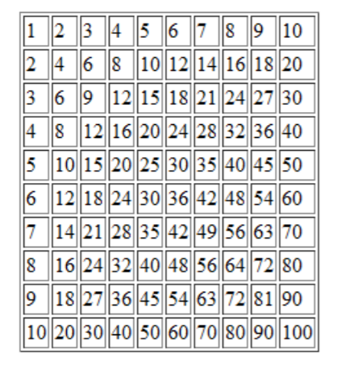

"Skapa en JavaScript-funktion som visar multiplikationstabellen enligt bilden nedan. Placera funktionen i en separat JS-fil. Testa funktionen i ett HTML-dokument."

Jag har skapat en .js-fil där jag har hela koden för att generera tabell.
Yttre for-loop, som går från 1-10. Variabeln är x.
Varje varv skall den öppna en rad, göra beräkningar i inre loopen, och stänga raden.
x ökas med 1.
I inre loopen, som också går från 1-10, används variabeln y.
Här öppnas en cell, beräkning x*y, och cellen sluts. Börjar om, med y ökar med 1.
Slutligen returneras hela värdet för den genererade tabellen.